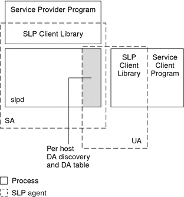

|
|||
|
Part I Network Services Topics Part II Accessing Network File Systems Topics 4. Managing Network File Systems (Overview) 5. Network File System Administration (Tasks) 6. Accessing Network File Systems (Reference) 8. Planning and Enabling SLP (Tasks) 10. Incorporating Legacy Services Part V Serial Networking Topics 15. Solaris PPP 4.0 (Overview) 16. Planning for the PPP Link (Tasks) 17. Setting Up a Dial-up PPP Link (Tasks) 18. Setting Up a Leased-Line PPP Link (Tasks) 19. Setting Up PPP Authentication (Tasks) 20. Setting Up a PPPoE Tunnel (Tasks) 21. Fixing Common PPP Problems (Tasks) 22. Solaris PPP 4.0 (Reference) 23. Migrating From Asynchronous Solaris PPP to Solaris PPP 4.0 (Tasks) 25. Administering UUCP (Tasks) Part VI Working With Remote Systems Topics 27. Working With Remote Systems (Overview) 28. Administering the FTP Server (Tasks) 29. Accessing Remote Systems (Tasks) Part VII Monitoring Network Services Topics |
SLP ImplementationIn the Solaris SLP implementation, the SLP SAs, UAs, DAs, SA servers, scopes, and other architectural components in Table 7-1 are partially mapped into slpd and partially into application processes. The SLP daemon, slpd, organizes certain off-host SLP interactions to do the following:
You can set the net.slpisDA property to also configure slpd to act as a DA. See Chapter 9, Administering SLP (Tasks). For more information about the SLP daemon, see slpd(1M). In addition to slpd, the C/C++ and Java client libraries (libslp.so and slp.jar) enable access to the SLP framework for UA and SA clients. The client libraries provide the following features:
No special configuration is necessary to enable the inter-process communication between slpd and the client libraries that provide the previous services. You must, however, run the slpd process first before you load the client libraries in order for the libraries to function. In the following figure, the SLP client library in the Service Provider Program employs SA functionality. The Service Provider Program uses the SLP client library to register and deregister services with slpd. The SLP client library in the Service Client Program employs UA functionality. The Service Client Program uses the SLP client library to make requests. The SLP client library either multicasts requests to SAs or unicasts them to DAs. This communication is transparent to the application except that the unicast method of issuing requests is faster. The behavior of the client library can be affected by setting various SLP configuration properties. For further information, see Chapter 9, Administering SLP (Tasks). The slpd process handles all SA functionality, such as answering multicast requests and registering with DAs. Figure 7-3 SLP ImplementationOther SLP Information SourcesRefer to the following documents for further information on SLP:
|
||
|